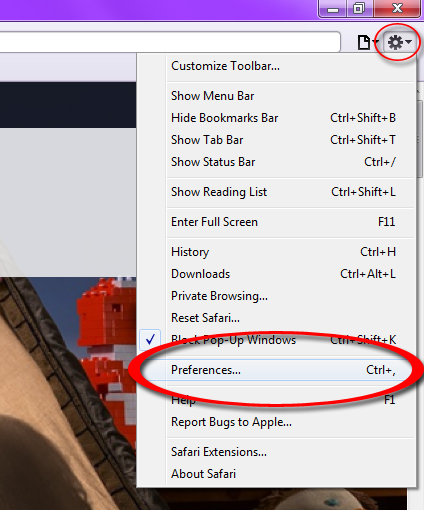
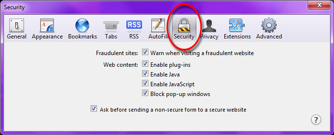
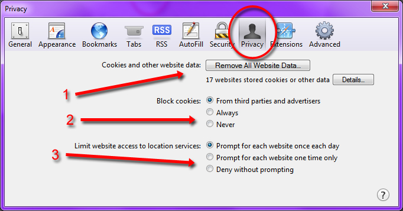

Lesson Navigation
Safari Lessons
Security
It's important to understand how to update your own Safari settings. Even though the settings are optimized automatically for your benefit, it is possible you may need slightly different settings to suit your own internet browsing style.
First, it is important to understand how you can change your security settings to meet your needs. The general rule is, more security is better than less security. Each security feature does something different. Safari has their security settings broken up into two sections. We'll show you how to access each section.
First, you're going to want to go to the upper right corner of the screen and click on the "Settings" icon (it looks sort of like a gear). When you click on it, it'll bring up a menu that looks like the one below. You'll want to click on the option in the menu that says "Preferences". The image below will show you what to click on.

After you click on "Preferences", a window like the one below will appear. Look through the buttons at the top of this window, and click on the one that says "Security" with a lock icon on it.

Make sure that all of the boxes in this area have a little check mark inside them. If a box doesn't have a check mark, click the box and a check mark will appear. When all of the boxes have a check mark in them (like the ones in the above picture) you're ready to move on.
Next, you'll want to click on the button at the top of the window that says "Privacy".
You'll recognize it because it has an icon the shape of a person. If you look at our image below,
you can see where to find this button and what will appear when you click on it.

You're probably wondering what those things are that all the arrows and numbers are pointing to in the image above. Here's a little information about them:
1. Cookies and other website data
This setting will tell you about what "cookies" are attached to your browser. Cookies are little tiny programs or pieces of code that get saved in your internet browser. Websites will put a cookie on your internet browser when they want to learn more about you. Over time, you will collect a lot of cookies, so it's important to clear them frequently. You can click "Remove All Website Data..." to remove the cookies that websites have stored on your browser. This will also log you out of any websites that you are always signed into. After you click on "Remove All Website Data...", click "Remove Now" to confirm the action, and then you're all done.
2. Block Cookies
This setting will tell the browser what websites are allowed to put cookies on your browser. You can choose to block third parties and advertisers (reccomended), block all cookies (this will not allow you to remain logged in on a website when you close your browser) or block no cookies (not reccomended).
3. Limit website access to location services
This setting will determine what happens when a website wants to know where you are located based on information it has collected from your computer. You can choose for each website you visit to prompt you every day in order to learn your location. You can choose for each website you visit to prompt you on the first time in order to learn your location. Lastly, you can choose for all websites to be denied knowing your location, and for you to never be prompted to give permission to a website to know your location.
When you're done changing your settings, simply click on the "X" or close button in the top right corner of the window. Your settings will be automatically saved once you close the window.
Now that you understand your Safari security settings, you're ready to go! If you would like to review some information about Safari or its interface, you can click the "Previous Lesson" button below.
Helpful Links:


The Simply Social brand is Simply Social Inc. 2014. Simply Social only owns the Simply Social logo, and all other images are copyrighted by their respective owners. The sources for these images, as well as the website icons, can be found in the about page. This website was made for a class project, and is not intended for any kind of commerce or commercial use. Simply Social is not affiliated in any way with any of the other websites mentioned or linked to in this website.